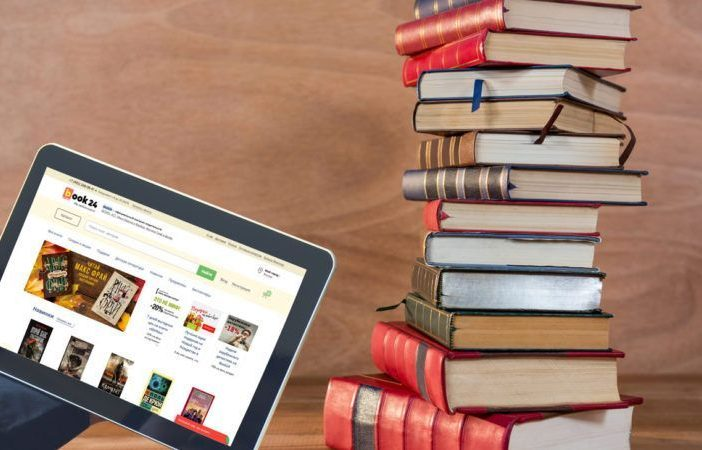

10 сайтів, де можна безкоштовно читати
онлайн книги українською

Оперативні новини у нашому каналі в Telegram!
Книга – чудовий спосіб збагатитися новою інформацією, провести час спокійно та змістовно, розслабитися після важкого робочого дня. Та на цьому переваги літератури далеко не закінчуються.
Тримайте добірку сайтів, де можна безкоштовно завантажити чи прочитати онлайн улюблені твори українською.
1. Відкрита книга – електронна бібліотека класики української та світової літератури, заснована в 2011 році. Головна відмінність від інших подібних за тематикою інтернет-ресурсів – відмінна якість тексті.. Ми Тут публікують тексти, які повністю відповідають друкованим оригіналам книг (паперовим книгам), які ретельно
2. Чтиво
Вільна онлайн-бібліотека україномовної літератури. Тут можна знайти багато цікавих текстів та завантажити їх у зручному форматі (*.fb2, *.epub, *.txt, *.htm, *.rtf, *.doc, *.pdf та *.djvu).
3. e-Bookua
На сайті представлена велика колекція різноманітних книг. Серед них – твори Чака Паланіка, Ірен Роздобудько, Юрія Андруховича тощо.
4. JavaLibre
Тут можна безкоштовно завантажити обрану книгу у кількох форматах – jar, jad, txt, fb2, epub, doc. Можна знайти твори і сучасних авторів, і класиків.
5. ІЗБОРНИК
Електронна бібліотека давньої української літератури. Українські літописи, хроніки, житія, апокрифи, граматики, лексикони, історично-мемуарна проза, перекладні та поетичні твори тощо.
6. Відкрита Книга
Тут немає реклами, а у бібліотеку розміщують лише ті твори, які стали суспільним надбанням. Завантажити можна у форматах pdf, fb2, doc, epub.
7. Поетика
Бібліотека української поезії. Тут можна прочитати вірші Ліни Костенко, Юрія Андруховича, Павла Мовчана, Івана Драча, Ігора Калинця, Марти Тарнавської, Віктора Неборака, Олександра Ірванця тощо.
8. УКРАЇНІКА
Історія, літературознавство, інженерна думка та винахідництво тощо – все це можна знайти на сайті Україніка. Але і художня література тут теж є.
9. УкрЛіб
Тут можна знайти відомі книги української та зарубіжної літератури.
10. Чарівний Жираф
Бібліотека вже майже перестала існувати. Проте, якщо клацнути на обрану букву і вибрати автора, там досі можна прочитати онлайн твори в українському перекладі.